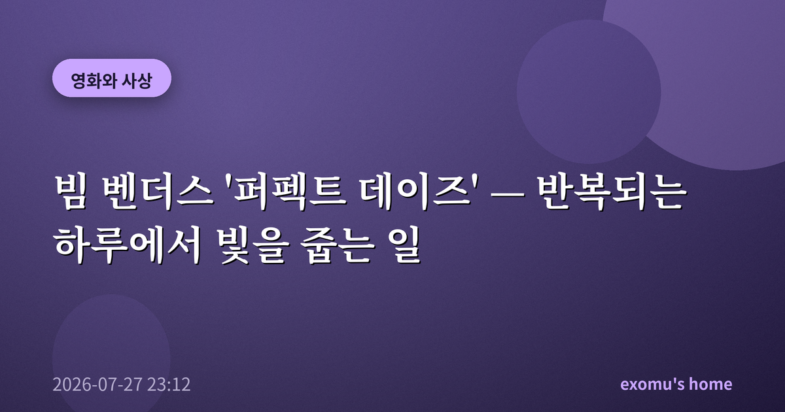
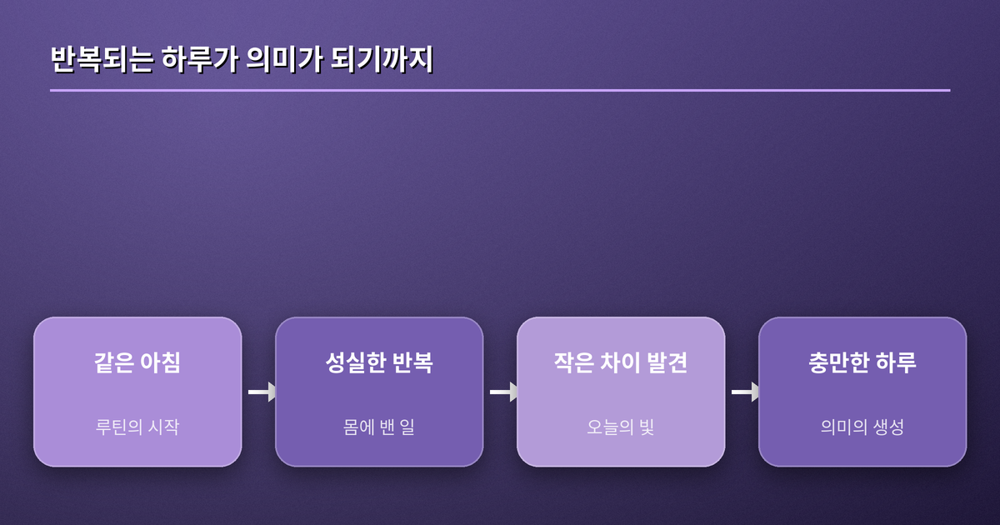
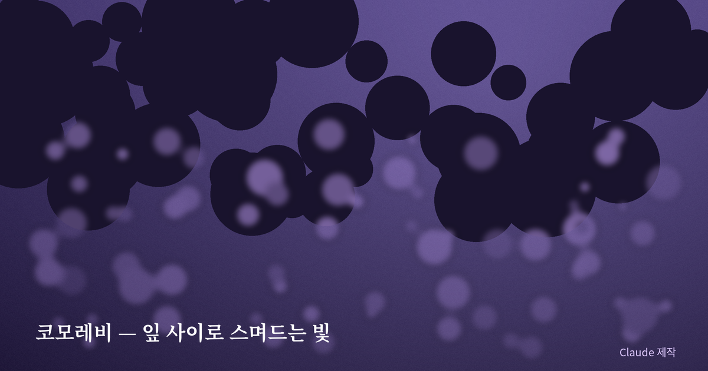
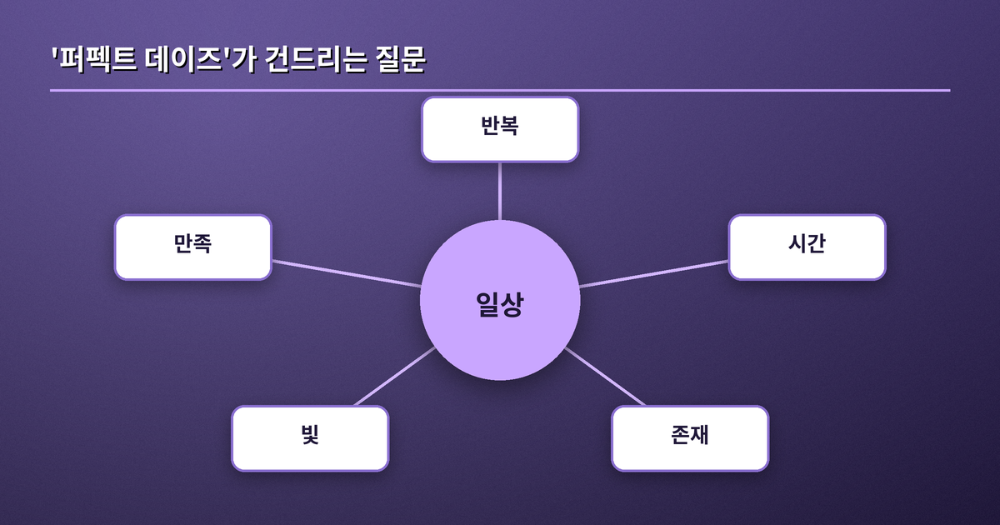
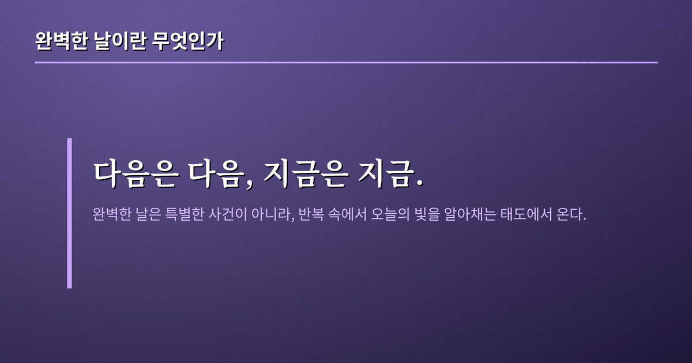

빔 벤더스 '퍼펙트 데이즈' — 반복되는 하루에서 빛을 줍는 일

나는 요즘 아침마다 같은 순서로 하루를 연다. 같은 시간에 눈을 뜨고, 같은 컵으로 커피를 내리고, 같은 길을 걷는다. 어떤 날은 그 반복이 안온하고, 어떤 날은 무겁다. 빔 벤더스의 '퍼펙트 데이즈'를 아직 스크린에서 만나지는 못했지만, 이 영화가 도쿄의 화장실을 청소하는 한 남자의 지극히 반복적인 하루를 담았다는 사실만으로도 나는 오래 서성이게 된다. 그래서 이 글은 관람 전의 사유다. 반복이라는 형식이 어떻게 삶의 내용이 되는가에 대한.
반복이라는 형식
주인공의 하루는 거의 동일하게 되풀이된다. 일어나고, 일하고, 목욕하고, 책을 읽고, 잠든다. 서사는 극적인 사건을 향해 달려가지 않는다. 대신 같은 동작의 미세한 차이들이 화면을 채운다. 나는 여기서 우리가 흔히 반복을 '지루함'과 등치시키는 습관을 의심하게 된다. 반복은 정말 의미의 반대말일까. 오히려 반복은 형식이고, 그 형식 안에서만 드러나는 결들이 있는 것은 아닐까.
흥미로운 것은 그가 하는 일이 사회적으로 낮게 취급되는 노동이라는 점이다. 화장실을 청소하는 일은 대개 서둘러 끝내고 잊고 싶은 것으로 여겨진다. 그러나 영화 속 그는 그 일을 서두르지 않고, 자기만의 도구와 순서로 정성껏 해낸다. 성실함이 굴욕의 반대편에 놓여 있음을, 어떤 일을 하느냐가 아니라 그 일을 어떤 태도로 대하느냐가 사람의 품격을 만든다는 것을 그의 손끝은 조용히 보여준다. 나는 이 대목에서 노동을 위계로만 재는 나의 습관을 부끄러워하게 된다.

코모레비, 다시 오지 않는 빛
일본어에는 '코모레비(木漏れ日)'라는 말이 있다. 나뭇잎 사이로 새어 드는 햇빛, 그리고 그 빛이 바닥에 만드는 흔들리는 무늬를 가리킨다. 같은 나무, 같은 자리라도 바람과 시간에 따라 그 무늬는 매번 다르고, 두 번 다시 똑같이 나타나지 않는다. 반복되는 풍경 속에서 유일무이하게 스러지는 이 빛은 영화가 말하려는 태도의 은유처럼 보인다. 완벽한 날은 특별한 사건이 오는 날이 아니라, 반복 속에서 오늘의 빛을 알아채는 날이라는.

일상성과 영원회귀 — 사상의 곁불
이 코모레비의 감각은 사진으로 붙잡히지 않는다. 두 번 다시 같은 무늬가 오지 않기에, 그것은 오직 지금 이 자리에 있는 사람에게만 허락된다. 반복되는 하루가 지루하지 않은 이유가 여기에 있다. 매일 같은 골목을 걸어도 빛의 각도와 바람의 세기가 다르니, 엄밀히 말해 같은 하루는 단 한 번도 오지 않는다. 지루함은 풍경이 아니라 그것을 바라보는 마음의 상태일지 모른다. 같은 것을 보면서도 매번 처음처럼 볼 수 있다면, 반복은 감옥이 아니라 오히려 무한한 변주의 무대가 된다.
이 지점에서 두 사상가가 떠오른다. 하나는 인간이 대개 익숙함에 파묻혀 존재를 잊고 살아간다고 본 하이데거다. 그는 평범한 일상성이야말로 우리가 세계와 관계 맺는 근본 방식이라 여겼고, 그 익숙함을 낯설게 마주할 때 비로소 자기 존재가 문제로 떠오른다고 보았다. 다른 하나는 니체다. 지금 이 하루가 영원히 똑같이 되풀이된다 해도 그것을 긍정할 수 있겠느냐고 그는 물었다. 이 물음은 반복을 저주가 아니라 시험대로 바꾼다. 두 사유를 곧이곧대로 옮기지 않더라도, 그 곁불만으로 반복은 견뎌야 할 형벌에서 살아낼 만한 형식으로 옮겨간다.

다시, 나의 하루로
영화의 주인공은 미래를 크게 걱정하지도, 과거를 오래 곱씹지도 않는 듯 보인다. "다음은 다음, 지금은 지금"이라는 태도. 나는 이 단순한 문장이 실은 대단히 어려운 수행임을 안다. 내 반복되는 아침이 무거운 날은, 대개 아직 오지 않은 하루를 미리 살고 있을 때다. 오늘 잎 사이로 드는 빛은 오늘만의 것이다. 나는 그 빛을 줍는 연습을 하려 한다. 관람 뒤에는 이 문장이 어떻게 달라져 있을지, 그것도 기대해 본다.
